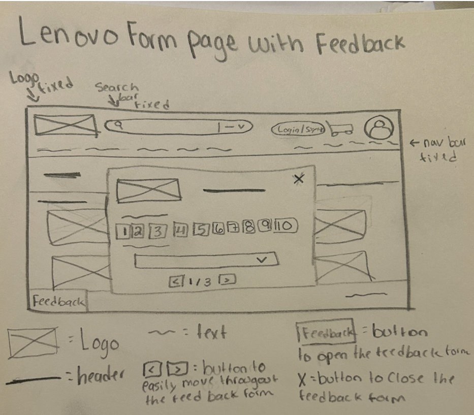
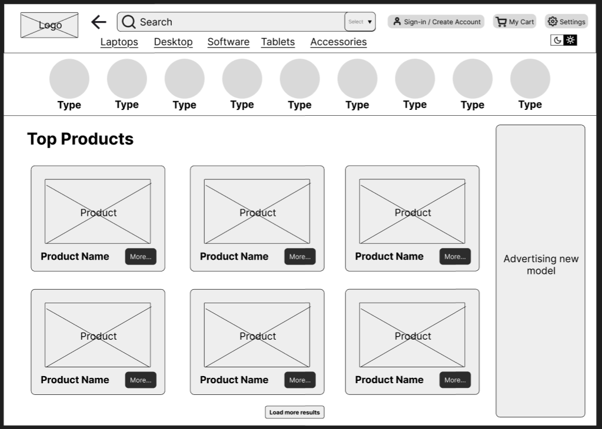
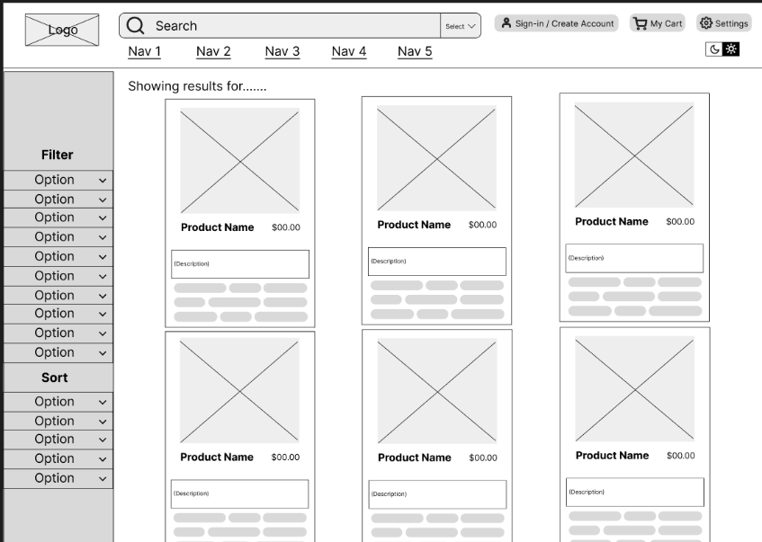
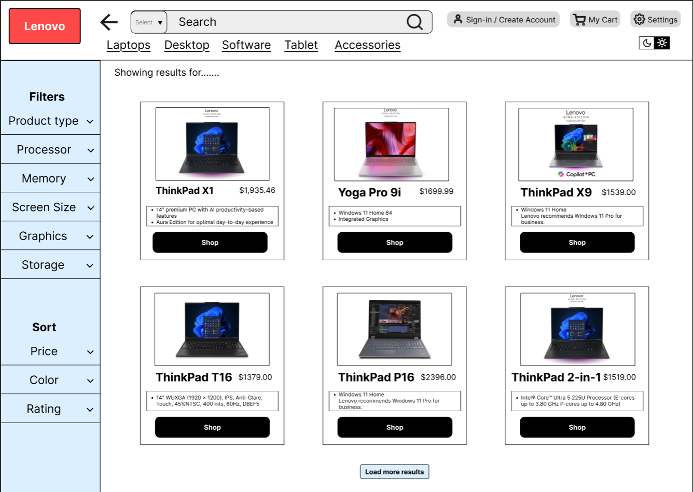
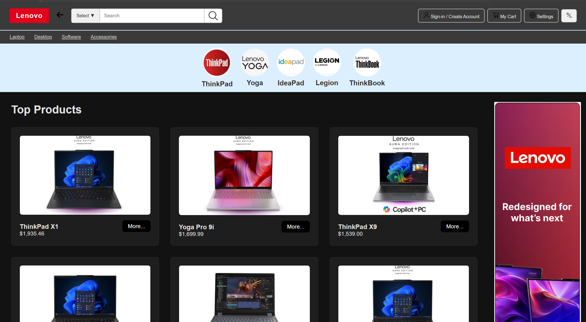

UX/UI Case Study
Lenovo Website Redesign
A case study documenting my individual contributions to improving usability, navigation, accessibility, and user flow in a Lenovo retail website redesign.
Define the Problem
The main issue with the original Lenovo retail website was its overwhelming and confusing interface. When users first entered the site, they were immediately met with multiple pop-ups that disrupted the experience. The header was also cluttered with a large number of links, many of which were unnecessary or repetitive.
As a result, users could easily become disoriented and accidentally navigate to pages they did not intend to visit. This created friction in the user experience and made it difficult to move smoothly between browsing products and completing actions.


Walk Through My Process
Sketching & Early Wireframes
To begin the redesign process, I started by sketching wireframes to explore ways to simplify the interface and reduce visual clutter. The goal at this stage was to remove distractions like pop-ups and create a cleaner layout that would guide users more clearly through the experience.


Figma Wireframes
After the initial sketches, I translated the ideas into digital wireframes using Figma. Based on early feedback, I focused on simplifying the homepage by removing unnecessary elements and keeping only the most important features for users.


Prototype Iterations
While developing the prototype, feedback revealed confusion around certain design elements, such as unclear icons and placement of key features like search. To address this, I refined the design by making icons more meaningful and aligning the layout with user expectations.


Development
For the final implementation, I built the redesigned site using HTML, CSS, and JavaScript. I focused on making sure the structure matched the prototype while ensuring all navigation and features worked consistently across pages.


Testing & Outcomes
To evaluate the design, I tested how users interacted with the navigation and overall layout. I checked whether users could easily move between pages and complete actions such as accessing the cart, signing in, and using settings.
From testing, I identified areas where users experienced confusion, especially with button placement and feature visibility. Based on this, I improved navigation clarity and simplified the dark mode feature to reduce the chance of misclicks.


Present the Final Product
The final redesign provides a cleaner, more structured experience with improved navigation and accessibility. Users can now move through the site more easily, access key features quickly, and customize their experience through settings and dark mode. https://bridgetbaron.github.io/Capstone_Team_9/index.html